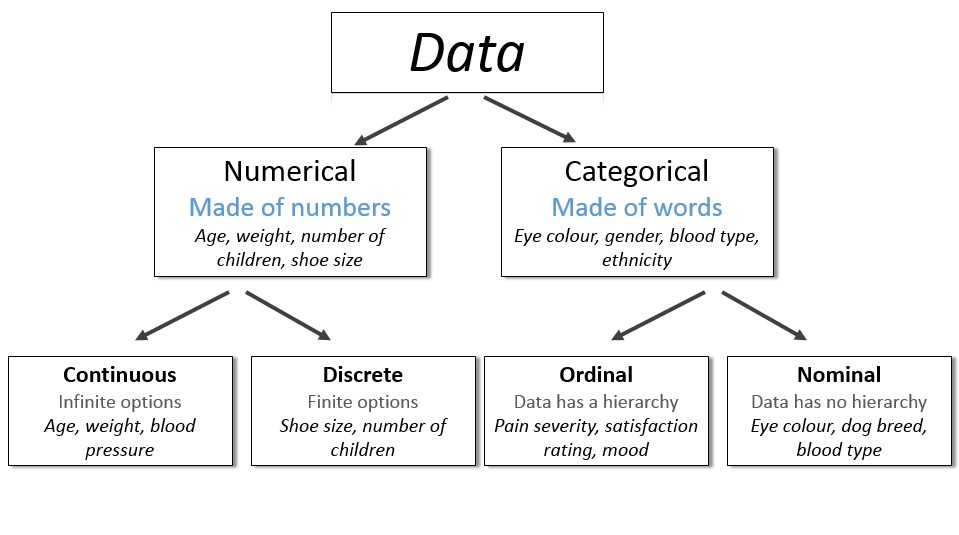

Research Methodology
Kwame Nkrumah University of Science and Technology
2024-05-28
Outline
Methods
- Qualitative
- Quantitative
- Mixed-method
For Each
- Study designs
- Sampling
- Sample size
- Data collection
- Data entry tools
- Analysis methods
- Presentation of results
What is Research Methodology?
Definition
A structured and scientific approach used to collect, analyze, and interpret quantitative or qualitative data to answer research questions or test hypotheses.\(^1\)
Details
Entails all the important aspects of research:
- Research design,
- Data collection methods,
- Data analysis methods
- Overall framework within which the research is conducted.\(^1\)
Questions?
- Which study methodology should I use?
- What are the advantages and disadvantages?
- What are their strengths and weaknesses?
Qualitative methods
What is qualitative research
- Involves collecting and analyzing non-numerical data. Example:
- Interview transcripts
- Documents
- Survey responses
- Images
- Visuals
- Videos
- Audios
- Understand concepts, opinions experiences and contents
- Used to
- Gather in-depth insights into a problem
- Generate new ideas for research \(^1\)
- Gather in-depth insights into a problem
- This is more subjective
Study designs
Two main types:
Population-based:
- Survey and polls
- In-depthh Interviews (KII)
- Focus Group Discussion
- Observations
Document based
- Case study
- Content research
- Systematic Literature Review
Systematic Literature Review
Definition
This is a comprehensive and unbiased type of literature review that systematically searches, identifies, selects, appraises, and synthesizes research evidence relevant to the research question
- Desk based study
- Information already exists
- There is a specific question to be answered
- Prone to bias
Systematic Literature Review II
Steps
- Hypothesis
- Study question
- Protocol development
- Study selection
- Data extraction
- Quality assessment
Protocol development
- Outline problem or knowledge gap
- Formulate research problem
- Define search strategy
- Databases to search
- Search words
- Inclusion & exclusion criteria
- Data extraction techniques
- Strategy for quality assessment
Systematic Literature Review III
Search strategy
- Which databases would be used?
- Which level of evidence will be included?
- RCTs, etc
- How will the search be done? “Pubmed with MESH”?
- What search words to include
- Quality control: Two independent searches?
Appraisal & synthesis
- Select studies
- Extract data
- Synthesize data
Reporting findings
- Writing the reviews
- Publishing
Content research I
Definition
A research tool used to determine the presence of certain words, themes, or concepts within some given qualitative data.
Application
- Quantify and analyze the presence, meanings, and relationships of certain words, themes, or concepts.
- E.g: Is there a bias in articles written about Pres. Nana Akufo-Addo?
- We look specifically for trends, special words that may connote bias or partiality.
Content research II
Uses
- Identify the intentions, focus, or communication trends
- Describe attitudinal and behavioral responses to communications
- Determine the psychological or emotional state of persons or groups
- Reveal differences in communication content
- Reveal patterns in communication content
- Pre-test and improve an intervention or survey before launch
- Analyze focus group interviews and open-ended questions to complement quantitative data (Mixed method)
Key informant interviews I
Definition
Key Informant Interviews (KIIs) are specialized qualitative interviews conducted with individuals (key informants) recognized for their insider knowledge or unique perspectives on a specific topic.

Key informant interviews III
How?
- Conducted one-on-one:
- Face-to-Face
- Telephone or Online
- Less formal structured
Why?
- Provides direct information from stake holders
- Gives understanding of decisions, etc
- As a basis for a quantitative study
- generate recommendations
Key Informant Interviews IV
Procedure
- Select people who fit criteria
- Schedule a one-on-one interview session
- Develop a plan for the interview
- Be ready to modify on the fly
- Record responses
Focus Group Discussion
Definition
A qualitative research method that involves facilitating a small group discussion with participants who share common characteristics or experiences that are relevant to the research topic.

Focus Group Discussion II
Planning the session
- Plan your session setup
- Venue
- How many participants
- How will they be recruited?
- Participants
- Must resemble target population
- 8-12 is usual
- Too few narrows the perspectives
- Too many means limited perspective from some members
- Who will facilitate or lead?
- Researcher
- Another person
- Embedded participant
- Who and how will sessions be recorded?
- Researcher
- Assistant
- Video or Audio recording
Focus Group Discussion III
Planning the session
- Come up with questions to ask
- Open-ended questions
- Should encourage exploration
- Should generate discussion. Example:
- What do you think about our services?
- What do you think about our competitors?
- What do you wish for in terms oourut services?
Running the session
- Consent
- Record with video or sound
- Make participants comfortable. Everyone introduces themselves.
- Ask your questions as well as followup questions
- Engage everyone in the group
Focus Group Discussion IV
Analyzing the data
- Rewatch the interview
- Check for themes
- Understand the patterns emerging
- Go for further data if required
Validating the conclusions
- Get someone else to review the data
- Remember findings are from a small sample size
- Observer bias - participants know they are being observed so may alter
- Behaviour
- Responses
Sampling & Sample size
Sampling population
- Usually purposive
- Study type dependent
- Apply strict inclusion & Exclusion criteria
- be mindful of saturation
- 30 participants usually enough
Sampling document
- Study type specific
- Literature review: 20-30
- Others: Subject specific
Data collection & management
Data Collection
- Ensure you have a good background knowledge
- Choose the right respondent
- A good introduction about yourself
- Consent & confidentiality
- Minimize disruption
- Be familiar with your research guide
- Data collected may include Videos, Audio recording, Write-up, Questionnaires, and Transcripts
Data Management
- Starts as soon as data collection
- Revisit data during collection
- Makes notes during or immediately after interview
- Organise and store de-identified data
- Transcribe data - Manual or software
- Data coding & interpretation:
- Manual or Software (advisable) e.g. NVIVO
Qualitative Analysis methods - I
Six main methods
- Content analysis
- Narrative analysis
- Discourse analysis
- Thematic analysis
- Grounded theory’
- IPA
- Content analysis
- Examines patterns in words, images, etc
- Identify frequency of words, phrases, etc
- Group into frequency, etc
- Need to approach with a plan e.g. “How many times does ‘happy’ appear in my interview?”
- Can be time consuming
- Can miss some important info in the data
Qualitative Analysis methods - II
- Narrative analysis
- Listening to people telling stories and analysing
- Pay attention to what and how story is told.
- E.g.: Narrative of a customer about a product
- Listen
- Analysimpressionson, likes, hate, etc
- Disadvantages: Small sample size and poor reproducibility
- Discourse analysis
- Analysis of conversation, interactions, speech, etc within its context
- Culture and circumstances are important here
- E.g.: Analyse how a CEO speaks to his employees
- Should have specific research question beforehand
- Involves sampling to saturation (New data adds no more information)
Qualitative Analysis methods - III
- Thematic analysis
- Takes often large data
- Looks for patterns (themes) within data
- Groups them as such
- Good for finding out views, experiences and opinions
- Study question and objective can evolve
- E.g.: Customers’ opinion about health care provision in a hospital
- Grounded theory
- Uses data to develop theory
- Go into the analysis with an open mind
- Develop the theory from ground up
- E.g.: What what treatment patients prefer and why?
- This theory develops from the data and not preconceived
- Useful for an area not researched
Presentation of results
- With themes
- Frequencies
- Patterns
- Compare to other studies
- Make conclusions
- As text and narrative
Quantitative methods
What is quantitative research
- Usually deals with numbers and statistics
- Used to measure differences or test between groups
Study designs
Descriptive
- Case study & series
- Cross-sectional study
- Qualitative study
Exploratory
- Cohort study
- Case control study
Experimental
- True experimental designs
- Quasi-experimental designs
Others
- Systematic Review
- Meta-analysis
Cross-sectional Study
- Researcher studies a stratified group of subjects at one point in time
- Draws conclusions by comparing the characteristics of the stratified groups
- Well-suited to describing variables and their distribution patterns
- Can be used for examining associations;
- Determination of which variables are predictors, and which are outcomes depends on the hypothesis:
Example
Does lead paint ingestion cause hyperactivity OR does hyperactivity lead to lead paint ingestion?
Cross-sectional study
Strengths
- Fast and inexpensive
- No loss to follow-up (no follow-up)
- Ideal for studying prevalence
- Convenient for examining potential networks of causal links
Weaknesses:
- Cannot establish causal relationship
- Does not establish sequence of events)
- Not practical for studying rare phenomena
Cohort Study
What is a cohort?
A group of individuals who do not yet have the outcome of interest are followed together over time to see who develops the condition
- Participants are interviewed or observed to determine the presence or absence of certain exposures, risks, or characteristics
- May be simply descriptive
- May identify risk by comparing the incidence of specific outcomes in exposed and not exposed participants
Cohort Study
Strengths
- Powerful strategy for defining incidence and investigating potential causes of an outcome before it occurs
- Time sequence strengthens inference that the factor may cause the outcome
Weaknesses
- Expensive, many subjects must be studied to observe outcome of interest
- Potential confounders: eg, cigarette smoking might confound the association between exercise and CHD
Case-Control Study
Generally retrospective
- Identify groups
- Cases (outcome present)
- Controls (Outcome absent)
- Matched or unmatched
- Look backward in time to find differences in:
- Predictor variables
Assumption:
- Differences in exposure => Different outcomes
Data collection via:
- Direct interview
- Mailed questionnaire
- Chart review
- etc
Case-Control Study II
Strengths
- Rare conditions
- Short duration & relatively inexpensive
- High yield of information from relatively few participants
- Useful for generating hypotheses
Weaknesses
- Increased susceptibility to bias
- Separate sampling of cases and controls
- Retrospective measurement of predictor variables
- No way to estimate the excess risk of exposure
- Only one outcome can be studied
Experimental studies
- To compare 2 or more groups by:
- Randomization
- Non-randomization
Assumption:
- The groups differ solely on the intervention applied
- Changes from pretest to posttest can be reasonably attributed to the intervention
- Most basic is the pretest-posttest control group design (RCT)
Experimental studies II
Strengths
- Controls the influence of confounding variables
- Randomization eliminates bias
- Blinding the interventions eliminates bias
Weaknesses
- Costly in time and money
- Many research questions are not suitable for experimental designs
- Usually reserved for more mature research questions
- Experiments tend to restrict the scope and narrow the study question
Quasi-Experimental studies
- Aims to establish a cause-and-effect relationship
- Useful when true experiment cannot be done (ethical, practical, etc)
- Do not use randomized assignments for comparisons (Non-random assignment)
- Control group not mandatory
Example
To investigate the relationship between Smoking and immediated Blood pressure measurement
Sampling
Population in research
- Target population: Any specified group (usually large) of persons, things, or measurement values, e.g. the study population, the sampled population, the target population.
- Study population: This is a subset of a population, whose properties have been, or are to be, generalized to the larger population or set.
- Sampling: This is a process of picking a sample from the population.
- Sample: Members of the study population who are selected for the study. Should be representative of the target population
Sampling in research
Non-Probability
- Convenience sampling
- Consecutive sampling
- Snowballing
- Quota sampling
- Purposive sampling
- Responder driven sampling (RDS)
Probability
- Simple random sampling
- Systematic sampling
- Stratified sampling
- Cluster sampling
- Multistage sampling
Simple Random Sampling
Properties
- Each member of a population has an equal chance of being selected.
- The sample is chosen randomly without any prior defined selection process.
- Unbiased method of selecting sample

Simple Random Sampling II
Advantages
- Minimal knowledge of group required
- Free from error of classification
- Suitable for data analysis
- Free from bias
- Simple to use
Disadvantages
- Population should not be dispersed
- Unusable in an heterogeneous
- Lacks use of available knowledge concerning population.
- Need for a well laid out sampling frame.
Systematic Random Sampling
Steps
- Define your population
- Generate your sampling interval
- Randomly select first participant
- select subsequent regular intervals

Systematic Random Sampling II
Advantages
- Simple to implement
- Simple to design
- No need for a ssmpling frame
- Good coverage of study area
Disadvantages
- Might introduce bias
- Trend
- Periodicity
Stratified Random sampling
Definition
A method of selecting a sample by dividing a population into smaller subgroups (strata) based on shared characteristics.

Stratified Random Sampling II
Advantages
- All groups included
- Statistical precision increased
Disadvantages
- Strata might be difficult to determine
- Sampling error difficult to measure
Cluster Sampling
Definition
This is a method of obtaining a representative sample from a population by dividing it into separate groups or clusters.
Steps:
- Divide population into clusters.
- Random selection of some clusters
- All members of cluster included in sample.

Multistage sampling

Convieneince sampling
Definition
Collection of data from population that is convieniently avaiable to provide. Also called “Accidental sampling”
Advantages
- High participation rate
- Easy to implement
Disadvantages
- Difficualt to generalise
- Bias
Consecutive sampling
Definition
This is a non-probability sampling technique where the researcher selects the sample units from a population in the order in which they appear.
- Advantages
- Fast and easy to carry out
- Cheap and affordable
- Researcher selection freedonm
- Disadvantages
- Selection bias
- Can only be used in small sample sizes
Snowballing Sampling

Sample Size
- Why bother
- Identify study population
- Draw a sample
- Describe sample (e.g mean)
- Make inferences about the whole population
Sample size - how many?
- Determinants
- Study objectives
- Type of study
- Study design
- Variables to be measured
- Achievability
- Too little
- Not representative enough
- Cannot make reasonable conclusions about population
- Waste of resources
- Ethically improper
- Too much
- Waste of resources
- Data redundancy
- Ethically improper
Sample size - not one formula fits all!!!
Sample size to determine the average systolic blood pressure of KATH workers
\[ n = \frac{Z^2 \sigma^2}{E^2} \]
Sample size required to determine proportion of hypertensives in KATH
\[ n = \frac{Z_\frac{1}{\alpha}^2 p (1-p)}{d^2} \]
Sample size – Comparing 2 means
- \(\mu_A\) is the mean in group A
- \(\mu_B\) is the mean in group B
- \(n_A\) is the sample size in first group
- \(n_B\) is the sample size in second group
- \(\kappa = \frac{n_A}{n_B}\) is the matching ratio
- \(\alpha\) is the type I error rate
- \(\beta\) is the type II error
\[n_A=\kappa n_B \;\text{ and }\; n_B=\left(1+\frac{1}{\kappa}\right) \left(\sigma\frac{z_{1-\alpha/2}+z_{1-\beta}}{\mu_A-\mu_B}\right)^2\]
Case-control study
Using the formulas below by Campbell et al \[n=\frac{[Z_{1-\alpha/2}\sqrt{2\bar{p}(1-\bar{p})}+Z_{1-\beta}\sqrt{p_A(1-p_A)+p_B(1-p_B)}]^2}{\delta^2}\] and \[N=\frac{r+1}{2r}\times n\]
- Where: \(p_A\) and \(p_B\) is the prevalence of the complications in hypertensives and non-hypertensives respectively.
- \(\delta=p_A-p_B\), and \(\bar{p}=\frac{(p_A+p_B)}{2}\), \(Z_{1-\alpha/2}=1.96\) and \(Z_{1-\beta}=0.84\). \(n\)
Database design, validation and verification
- Validation
- Limits
- Valid ranges
- Allowable values
- Some software better than others
- Cleaning
- Regular review of filled questionnaires
- Weekly checking of entered data for correctness
- Verification
- Single entry
- 10% verification
- Whole database verification
- Double entry
- Create identical database
- Double enter data
- Picks data entry errors
- Compare the data from both databases
- Identify discrepancies
- Correct errors as necessary
- Single entry
Data Warehousing
Always remember to:
- Backup the data regularly – 3 copies
- Backup with versions and dates
- Keep in the appropriate format
- Microsoft Excel
- Text files
- Tiff
Data migration & cleaning
Cleaning
- Involves picking out
- Erroneous and
- Missing data
- Picks up
- Data collection & entry errors
- Strategy depends on
- Continuous variable
- Discrete variable
- Categorical
Migration
- Moving data around
- Should be in stable state
- Not all software requires this
Data Analysis

Variable types
- Independent (predictor) variable
- Potentially influences, affects or predicts another variable
- E.g: How age influences income make age the independent variable
- Dependent (predicted) variable
- Potentially predicted, influenced and affected by another variable
- E.g: How age influences income make income the dependent variable
- Software
- R - Analysis only
- Microsoft Excel - Entry and analysis
- Stata - Analysis only
- SPSS - Entry and analysis
Data analysis
Descriptive analysis
- Describe your data
- Categorical variables
- Univariate
- Frequencies + percentages
- Bivariate
- Frequencies + percentage
- Univariate
- Numerical variables
- Normally distributed: Mean(SD)
- Not normally distributed: Median(IQR)
Inferential analysis
- Uses sampled data to draw conclusions about a larger population.
- Allows you to make generalizations about a population based on data from samples.
- Involves testing hypotheses and deriving estimates
- P-values
- Confidence intervals
Presentation of results
- Text, graphs, maps, tables, etc
Mixed methods
What is mixed-methods research
- Bring quantitative and qualitative researches together
- Qualitative component: Used to explore and develop hypothesis
- Quantitative component: Used to test the hypothesis
- Assumed to be advantageous to either of the two alone
- Analysis involves both quantitative and qualitative methods
Mixed methodology - types
5 main types
- Convergent parallel design
- Explanatory sequential design
- Exploratory sequential design
- Embedded design
- Transformative Design
- multiphase design
Convergenet parallel design
- Simulative collect of both qualitative and Quantitative data
- Merged but data analysed done seperately
- Results used to complement each other
- Advantages:
- Combines the two data types
- Quantitative => generalisability
- Qualitative => provides indepth understanding
E.g: Factors affecting practicing of KMC
Explanatory sequential design
- Also know as two-phased design
- Sarts with quantitave and then qualitattive study
- Qualitative gives indepth knowledge behind the results obtianed in quantitative
E.g: Factors affecting practicing of KMC
- Quantitative: Determine factors
- Qualitative: Detemine the thinking behind the observed data
Exploratory qualitative design
- Similar to above
- Qualitative done before quantitative
- Qualitative helps to
- Design design quantitative methodology
- Design instrument or questionnnaire
E.g: Factors affecting practicing of KMC
Take home messagge
- Three types of methodology
- Qualliative
- Quantitative
- Mixed
- They all have their individual strengths and weakness
- Know which will best fit your objectives